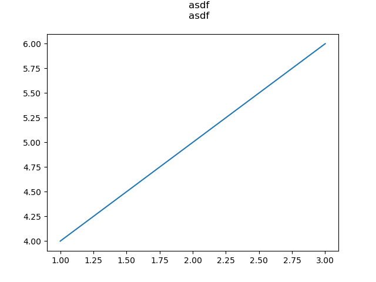
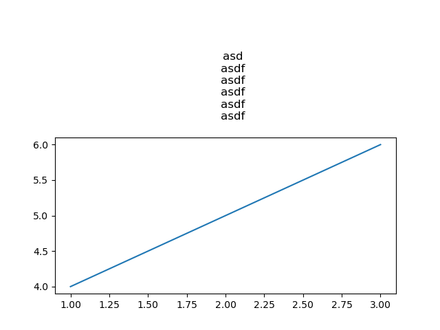
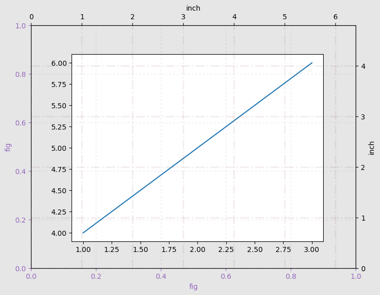

Examples¶
set_margin¶
The set_marching function provides a fixed margin around a figure.
Unlike tight_layout, this method preserves the figure’s size.
It is particularly useful when creating figures for scientific articles where a specific figure size is desired.
[1]:
from IPython import get_ipython
# noinspection PyBroadException
try:
_magic = get_ipython().run_line_magic
_magic("load_ext", "autoreload")
_magic("autoreload", "2")
except:
pass
import uscit as ut
import matplotlib.pyplot as plt
[2]:
def export_file_to_temp(fig):
import tempfile
from PIL import Image
from IPython.display import display
# Save the plot to a temporary file
with tempfile.NamedTemporaryFile(suffix='.png') as tmpfile:
fig.savefig(tmpfile.name)
# Open the temporary file as an image using PIL
img = Image.open(tmpfile.name)
display(img)
[3]:
# Without modifying the margins
def create_figure():
x = [1, 2, 3]
y = [4, 5, 6]
fig, ax = plt.subplots()
ax.plot(x, y)
plt.close(fig)
ax.set_title('''
asd
asdf
asdf
asdf
asdf
asdf
''')
return fig
fig = create_figure()
export_file_to_temp(fig)

[4]:
# Modifying the margins using the function set_margin
fig = create_figure()
ut.set_margin(f=fig, y2=2)
export_file_to_temp(fig)

set_fig_rule¶
[29]:
fig, ax = plt.subplots()
ax.plot([1, 2, 3], [4, 5, 6])
ut.set_fig_rule(f=fig, g=True)
try mac

[ ]: